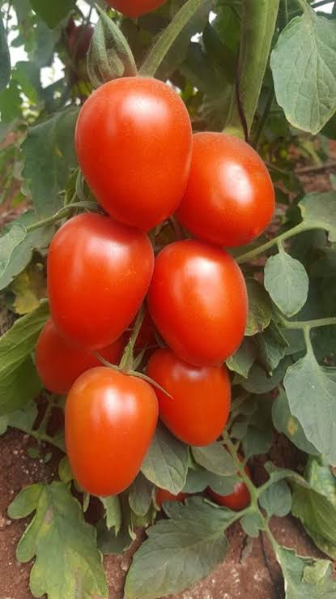
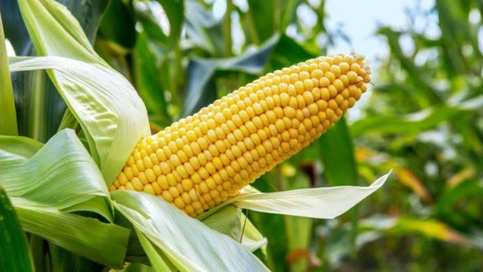

Center for Sustainable Agribusiness and Food Security (CESAF) NGO
....Promoting Sustainable Agricultural Production
Rice Farming
Select a heavy soil, slightly acidic to neutral (PH 5.5 to 7.0) for rice growing. High yields are usually associated with soils that have a high clay content of 40 to 60%. The soil should contain a moderate amount of organic matter with high degree of humification and good but not excessive drainage to minimize water loss. Farmers should therefore select...
Tomato Farming

Tomato farming has been a money spinner for ages due to the fact that almost everybody eats the vegetable. From Nigeria to Ghana, The United Kingdom to Japan, Ondo to Zaria, Aba to Lokoja and Lagos to Abuja, tomato is a produce that can turn you to a millionaire in no time if...
Maize Farming

Select a well drained fertile Sandy loam soil that is rich in organic matter but avoid water logging condition. Field measurement is very important because.....
Do you need a Practical One on One Fingerlings Production Training on your Farm?
Contact CESAF today!
Call: 08051676205